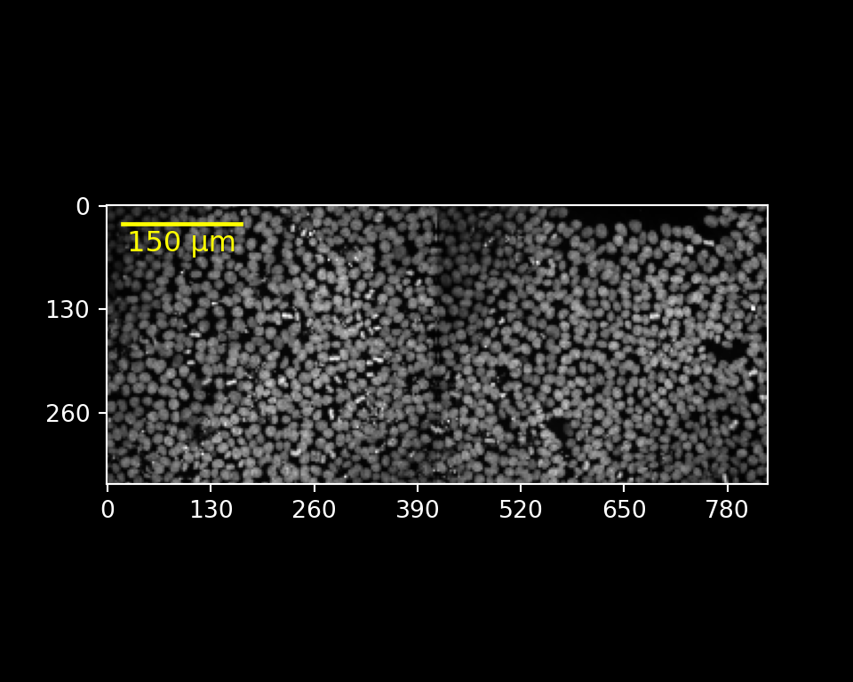

Using ez-zarr in R
Charlotte Soneson, Michael Stadler
2025-05-10
Source:vignettes/ezzarr.Rmd
ezzarr.RmdThis vignette describes how to use the ezzarr R package,
which provides a thin R wrapper around the ez-zarr python
package. For a full documentation of the functionality provided by
ez-zarr, we refer to the website.
ezzarr does not add any new functionality compared to
the python package, but provides an easy way to set up and activate a
conda environment with all necessary dependencies for
ez-zarr, and once the environment is activated in an R
session, the reticulate package can be used to access the
functionality in ez-zarr, to import and interact with image
and plate objects from OME-Zarr files in R.
Check the version of ez-zarr
The getEzZarrVersion() function returns the version of
ez-zarr which will be installed and used by the current
version of ezzarr. Calling this function will also build
the conda environment if it does not already exist.
getEzZarrVersion()
#> [1] "0.3.8"Get the path to the environment
ezzarr provides a convenience function to get the path
to the ez-zarr conda environment. This can be
useful e.g. in order to activate the environment outside of R.
getEzZarrEnvPath()
#> [1] "/Users/runner/Library/Caches/org.R-project.R/R/basilisk/1.21.0/ezzarr/0.1.5/ezzarr"Download example data to temporary directory
In the remainder of this vignette, we will illustrate the use of
ezzarr by means of an example data set, representing a
maximum intensity projection of one well from a high-content screening
plate, processed using Fractal. The
same data set is used in the ez-zarr python
documentation. The data is available on Zenodo; here, we download
and unpack it to a temporary directory.
td <- tempdir()
url <- "https://zenodo.org/records/10519143/files/20200812-CardiomyocyteDifferentiation14-Cycle1_mip.zarr.zip"
download.file(url, destfile = file.path(td, basename(url)))
unzip(file.path(td, basename(url)),
exdir = td)Before going further, we save the path to the unpacked data set in
the zarrpath variable, and explore the content of the
directory.
zarrpath <- file.path(td, sub("\\.zip$", "", basename(url)))
fs::dir_tree(zarrpath, recurse = 3)
#> /var/folders/w5/_8wgjw3j5cg6mgrth3s2kg9m0000gn/T//Rtmp9J2Urn/20200812-CardiomyocyteDifferentiation14-Cycle1_mip.zarr
#> └── B
#> └── 03
#> └── 0
#> ├── 0
#> ├── 1
#> ├── 2
#> ├── 3
#> ├── 4
#> ├── labels
#> └── tablesActivate the environment
Next, we activate the conda environment that contains
ez-zarr and all necessary dependencies, via the
enableEzZarr() function. In addition to activating the
conda environment, this function returns a list of imported
python modules, which can be used to access python functions.
## Activate environment
env <- enableEzZarr()
## List imported modules
names(env)
#> [1] "plt" "np" "ez_zarr"
## Switch matplotlib backend (for non-interactive use)
env$plt$switch_backend("agg")Load an example image
Now that the environment is activated, we can import an image from an
OME-Zarr fileset. We do this by creating an object of the Image
class, defined in ez-zarr.
img <- env$ez_zarr$ome_zarr$Image(path = file.path(zarrpath, "B/03/0"))
img
#> Image 0
#> path: /var/folders/w5/_8wgjw3j5cg6mgrth3s2kg9m0000gn/T//Rtmp9J2Urn/20200812-CardiomyocyteDifferentiation14-Cycle1_mip.zarr/B/03/0
#> n_channels: 1 (DAPI)
#> n_pyramid_levels: 5
#> pyramid_zyx_scalefactor: [1. 2. 2.]
#> full_resolution_zyx_spacing (micrometer): [1.0, 0.1625, 0.1625]
#> segmentations: empty, nuclei
#> tables (measurements): FOV_ROI_table, expected_table_FOV_ROI_table_1_False_0_0, expected_table_FOV_ROI_table_1_True_0_0, expected_table_masked_nuclei_ROI_table_0_True_0_0, expected_table_masked_nuclei_ROI_table_1_True_0_0, expected_table_well_ROI_table_0_True_0_0, expected_table_well_ROI_table_3_False_0_0, expected_table_well_ROI_table_3_True_0_0, nuclei, nuclei_ROI_table, well_ROI_table
img$tree(level = 1)
#> /
#> ├── 0 (1, 1, 2160, 5120) uint16
#> ├── 1 (1, 1, 1080, 2560) uint16
#> ├── 2 (1, 1, 540, 1280) uint16
#> ├── 3 (1, 1, 270, 640) uint16
#> ├── 4 (1, 1, 135, 320) uint16
#> ├── labels
#> └── tablesGet details about the image
ez-zarr contains many methods
for accessing various aspects of an Image object. Here, we
illustrate some of these.
## Channel information
length(img$nchannels_image)
#> [1] 1
img$channels[[1]]
#> $color
#> [1] "00FFFF"
#>
#> $label
#> [1] "DAPI"
#>
#> $wavelength_id
#> [1] "A01_C01"
#>
#> $window
#> $window$end
#> [1] 800
#>
#> $window$max
#> [1] 65535
#>
#> $window$min
#> [1] 0
#>
#> $window$start
#> [1] 110
## Label names
img$label_names
#> [1] "empty" "nuclei"
## Scales for a given pyramid level
unlist(img$get_scale(pyramid_level = "2"))
#> [1] 1.00 1.00 0.65 0.65
## Path
img$get_path()
#> [1] "/var/folders/w5/_8wgjw3j5cg6mgrth3s2kg9m0000gn/T//Rtmp9J2Urn/20200812-CardiomyocyteDifferentiation14-Cycle1_mip.zarr/B/03/0"
## Image name
img$name
#> [1] "0"
## Table names
img$table_names
#> [1] "FOV_ROI_table"
#> [2] "expected_table_FOV_ROI_table_1_False_0_0"
#> [3] "expected_table_FOV_ROI_table_1_True_0_0"
#> [4] "expected_table_masked_nuclei_ROI_table_0_True_0_0"
#> [5] "expected_table_masked_nuclei_ROI_table_1_True_0_0"
#> [6] "expected_table_well_ROI_table_0_True_0_0"
#> [7] "expected_table_well_ROI_table_3_False_0_0"
#> [8] "expected_table_well_ROI_table_3_True_0_0"
#> [9] "nuclei"
#> [10] "nuclei_ROI_table"
#> [11] "well_ROI_table"Plot image
Plots in ez-zarr are implemented using
matplotlib.pyplot and display correctly when using the plot
methods interactively from python (e.g. img.plot()) or from
R via reticulate (e.g. img$plot()). A special
case is the use of plot methods in non-interactive Rmarkdown or Quarto
documents. In these, the plots are only shown for python
code chunks, which is used in the examples below (note the
r.img syntax to refer to the img object in the
R process).
Adding a scale bar, limiting the channel range
r.img.plot(channels = [0],
channel_colors = ["white"],
channel_ranges = [[100, 600]],
scalebar_micrometer = 150,
scalebar_color = "yellow",
scalebar_position = "topleft",
scalebar_label = True,
fig_width_inch = 5,
fig_height_inch = 4,
fig_dpi = 100,
axis_style = "micrometer")
The corresponding R code for interactive is shown below. Please note
that you need to use specific R data structures to satisfy the expected
arguments types of the python function. For example, a python list
([...]) has to be created using an R list
(list(...)) and not a vector. For a list of the conversions
that reticulate uses between R and python data structures see reticulate
type conversions.
Overlay nuclei segmentation
r.img.plot(label_name = "nuclei",
pyramid_level = "0",
upper_left_yx = [130, 140],
lower_right_yx = [300, 310],
scalebar_micrometer = 30,
scalebar_color = "magenta",
fig_width_inch = 5,
fig_height_inch = 5,
fig_dpi = 100)
#> /Users/runner/Library/Caches/org.R-project.R/R/basilisk/1.21.0/ezzarr/0.1.5/ezzarr/lib/python3.10/site-packages/ez_zarr/ome_zarr.py:929: UserWarning: For the requested pyramid level (0) of the intensity image, no matching label ('nuclei') is available. Up-scaling the label using factor(s) [1. 4. 4.]
#> warnings.warn(f"For the requested pyramid level ({pyramid_level}) of the intensity image, no matching label ('{lname}') is available. Up-scaling the label using factor(s) {scalefact_yx}")Import and plot entire plate
Above, we imported and visualized a single image.
ez-zarr also contains classes to represent high-content
screening plates or other, arbitrary, collections of images. Here, we
use the import_plate() function to read the whole plate
(note that only one well was imaged).
plt <- env$ez_zarr$ome_zarr$import_plate(zarrpath)Again, we use a python code chunk for the plot to be included in our compiled notebook (not needed for interactive use):
Extract subarray
In addition to plotting, ez-zarr also contains
functionality to extract subarrays of a given image, based on
coordinates (given either in pixel space for a given pyramid level, or
in micrometers). Here we illustrate this by extracting a subarray
defined by a bounding box in the x/y plane (the same area that we zoomed
in to above), and displaying the resulting array with the
EBImage R package.
out <- img$get_array_by_coordinate(upper_left_yx = c(130, 140),
lower_right_yx = c(300, 310),
pyramid_level = "0",
as_NumPy = TRUE,
coordinate_unit = "micrometer")
## Output is an R array
class(out)
#> [1] "array"
dim(out)
#> [1] 1 1 1046 1046
## Display 2d image
im <- EBImage::Image(out[1, 1, , ] / 500)
EBImage::display(im, method = "raster", interpolate = FALSE)It is also possible to extract a pair of arrays (from the intensity image and one or more of the provided labels).
pair <- img$get_array_pair_by_coordinate(label_name = "nuclei",
upper_left_yx = c(130, 140),
lower_right_yx = c(300, 310),
pyramid_level = "0",
coordinate_unit = "micrometer")
length(pair)
#> [1] 2
## Intensity image
dim(pair[[1]])
#> [1] 1 1 1044 1048
## Label(s)
length(pair[[2]])
#> [1] 1
dim(pair[[2]][[1]])
#> [1] 1 1044 1048Session info
sessionInfo()
#> R version 4.5.0 (2025-04-11)
#> Platform: aarch64-apple-darwin20
#> Running under: macOS Sonoma 14.7.5
#>
#> Matrix products: default
#> BLAS: /Library/Frameworks/R.framework/Versions/4.5-arm64/Resources/lib/libRblas.0.dylib
#> LAPACK: /Library/Frameworks/R.framework/Versions/4.5-arm64/Resources/lib/libRlapack.dylib; LAPACK version 3.12.1
#>
#> locale:
#> [1] en_US.UTF-8/en_US.UTF-8/en_US.UTF-8/C/en_US.UTF-8/en_US.UTF-8
#>
#> time zone: UTC
#> tzcode source: internal
#>
#> attached base packages:
#> [1] stats graphics grDevices utils datasets methods base
#>
#> other attached packages:
#> [1] EBImage_4.51.0 ezzarr_0.1.5
#>
#> loaded via a namespace (and not attached):
#> [1] Matrix_1.7-3 jsonlite_2.0.0 crayon_1.5.3
#> [4] compiler_4.5.0 filelock_1.0.3 Rcpp_1.0.14
#> [7] bitops_1.0-9 parallel_4.5.0 jquerylib_0.1.4
#> [10] systemfonts_1.2.3 textshaping_1.0.1 png_0.1-8
#> [13] yaml_2.3.10 fastmap_1.2.0 reticulate_1.42.0
#> [16] lattice_0.22-7 R6_2.6.1 generics_0.1.3
#> [19] knitr_1.50 BiocGenerics_0.55.0 htmlwidgets_1.6.4
#> [22] tibble_3.2.1 desc_1.4.3 fftwtools_0.9-11
#> [25] pillar_1.10.2 bslib_0.9.0 tiff_0.1-12
#> [28] rlang_1.1.6 cachem_1.1.0 dir.expiry_1.17.0
#> [31] xfun_0.52 fs_1.6.6 sass_0.4.10
#> [34] cli_3.6.5 magrittr_2.0.3 withr_3.0.2
#> [37] pkgdown_2.1.2.9000 digest_0.6.37 grid_4.5.0
#> [40] locfit_1.5-9.12 basilisk_1.21.0 lifecycle_1.0.4
#> [43] vctrs_0.6.5 glue_1.8.0 evaluate_1.0.3
#> [46] ragg_1.4.0 RCurl_1.98-1.17 abind_1.4-8
#> [49] rmarkdown_2.29 pkgconfig_2.0.3 basilisk.utils_1.21.0
#> [52] tools_4.5.0 jpeg_0.1-11 htmltools_0.5.8.1